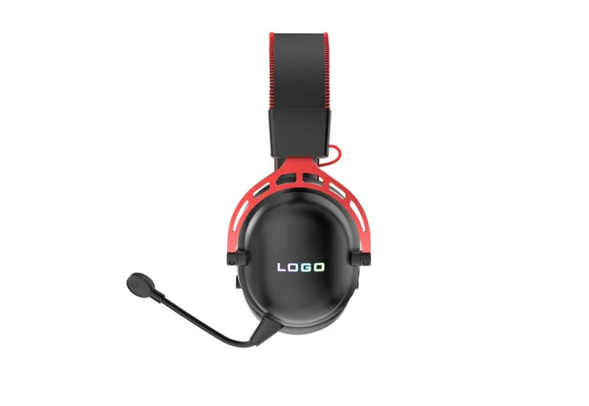
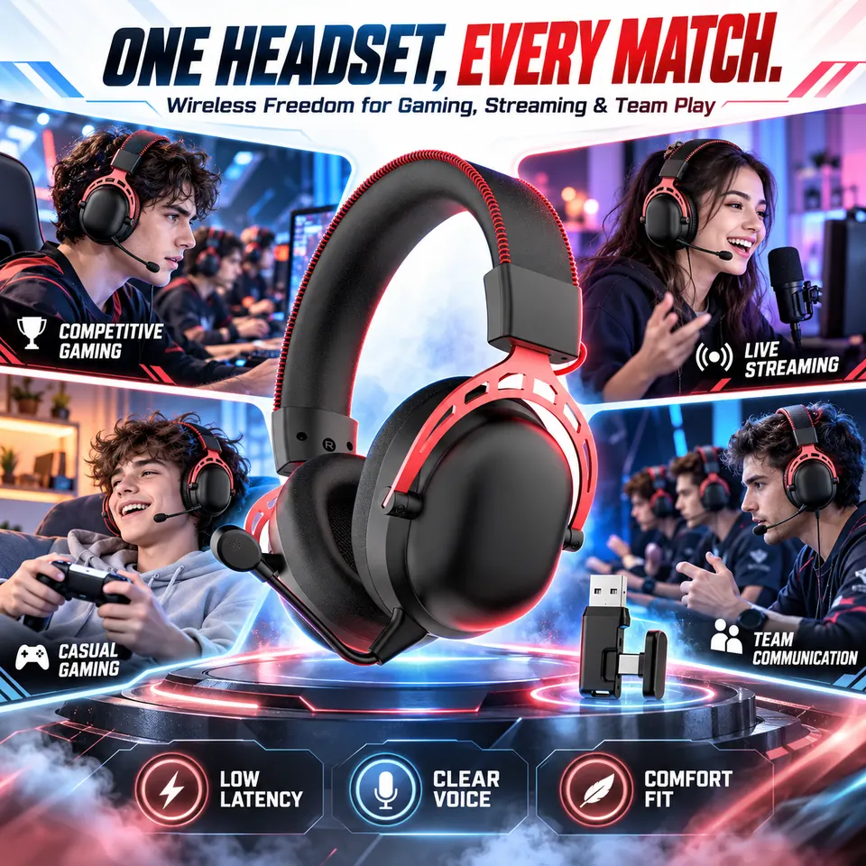
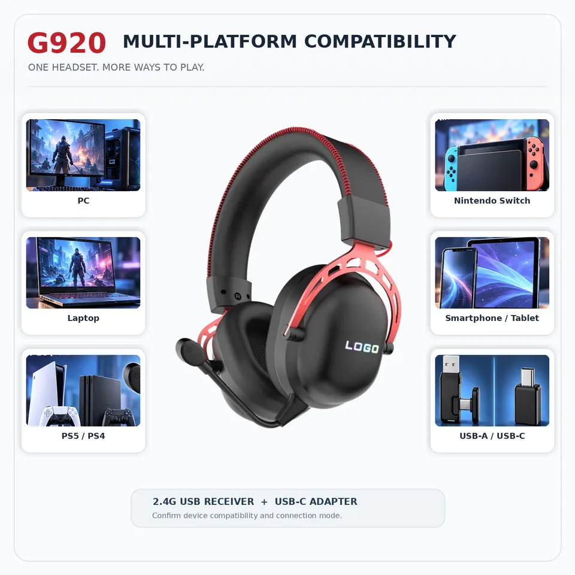

Which G920 version is shown here?
This page covers the black and red wireless G920, with a 2.4GHz USB receiver pictured. The wired-only G920 has a separate page; do not carry over its cable or accessory details.

G920 / 2.4GHz receiver / OEM samples
Want a black and red option for your gaming range? G920 combines red frame accents and headband stitching with over-ear cushions, a boom microphone and a 2.4GHz USB receiver. See the headset on its own, then compare the illustrated gaming and streaming setups. Tell us which devices you want to support before choosing a sample.

Looking for the other connection version? View G920 wired. Images, specifications and accessory sets are kept separate.
Product images
Three revised graphics show the black and red finish, illustrated use scenes and target-device examples. Scene lighting and logo artwork are illustrative, not proof of headset lighting, a finished brand design or completed performance tests.


Listed model details
The product graphics are new; the figures below remain existing catalogue references. Confirm the selected sample and current specification sheet before ordering.
The listed playback time is approximately 50 hours with lights off. It is not a new battery test, and actual runtime depends on volume and use.
The listed 20ms latency is not a zero-delay claim or a measurement of every device connection.
Device connections
The supplied diagram illustrates target devices. A USB socket alone does not establish USB audio support, and playback and microphone input need separate checks.
Before choosing a sample
Product FAQ
This page covers the black and red wireless G920, with a 2.4GHz USB receiver pictured. The wired-only G920 has a separate page; do not carry over its cable or accessory details.
No. It shows target-device examples. Check the exact device, USB audio host support, receiver or USB-C adapter and microphone input. Bluetooth pairing is not established by this diagram.
The supplied graphic says a wireless receiver is included and pictures a USB-C adapter. Confirm the exact included set for your selected version and order. Pictured parts are not automatically included.
Use the G920-specific sample inquiry and share your target devices, market and branding needs. Review the headset, microphone, receiver and agreed accessory list before approving packaging artwork.
Send your target device, market and model question. A finished RFQ is not needed to start.